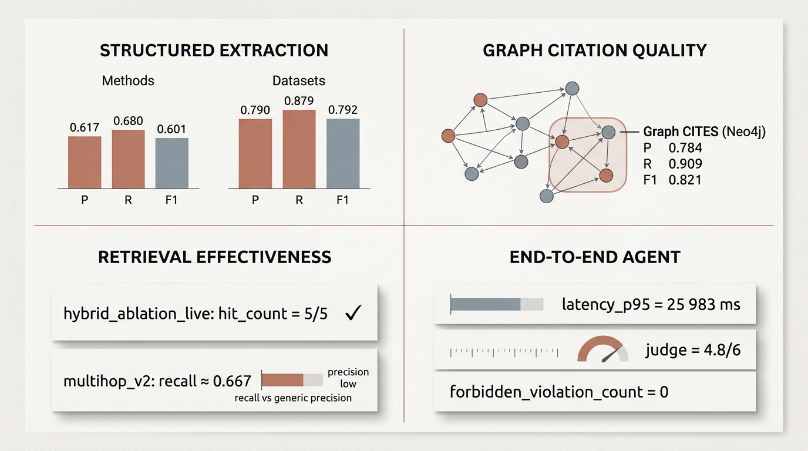

Интеллектуальная система поддержки научного исследования на основе GraphRAG
GraphRAG, агентный поиск и проверяемые ответы по научным статьям.
РоманИтоговый проектРепозиторий: science-graphrag
Problem
Нужен не просто RAG, а исследовательский инструмент с графовой структурой и цитатами.
System
Corpus ingestion, knowledge graph, retrieval, supervisor-based runtime и проверяемые ответы.
Result
Рабочая GraphRAG-система и честная benchmark-оценка, которая не скрывает ограничения.
01
Структура выступления
План защиты
01Цель и задачи проекта
02Какие технологии использовались
03Архитектура; демонстрация системы; основные результаты и выводы
04Выводы, ограничения, итоги и направления развития
05Вопросы
Центральная часть защиты: не только идея, но и рабочий объект — архитектура,
короткая демонстрация, метрики и честные выводы.
02
Постановка задачи
Цель и задачи проекта
Сквозная GraphRAG-система для исследователя над связным корпусом статей:
структура знаний, retrieval и ответы с цитатами.
articles
graph
retrieval
cited answer
1
Нормализовать статьи и извлечь структуру для графа.
2
Построить граф знаний и векторный retrieval.
3
Агентный runtime: supervisor и специализированные агенты.
4
Ответы с обязательными цитатами по источникам.
5
Честная оценка через benchmark-метрики.
Ключевой тезис
Не отдельный поиск, а полная цепочка: ingest → graph → ответ с цитатами → evaluation.
03
Технологический стек
Какие технологии использовались
Стек выбран не ради сложности: каждая технология закрывает отдельный слой системы.
Именно сочетание PostgreSQL + Neo4j + Qdrant + supervisor делает
проект GraphRAG-системой, а не обычным RAG-приложением.
Ключевые слои системы
Backend и runtime: Python, FastAPI, orchestration / supervisor.
UI и наблюдаемость: React UI, traces, logs, metrics.
Оценка качества: P / R / F1, ROUGE-L, latency_p95 и retrieval metrics.
Ключевая инженерная идея здесь не в одной библиотеке, а в сочетании трёх хранилищ,
extraction pipeline и supervisor-based runtime поверх уже подготовленных данных.
04
Главный инженерный результат
Архитектура системы
Почему архитектура устроена именно так
Ingest и chat runtime разделены по времени и по смыслу.
PostgreSQL хранит операционное состояние и артефакты конвейера.
Neo4j нужен для графа знаний и структурных запросов.
Qdrant отвечает за семантический поиск по фрагментам.
Supervisor работает только в runtime и маршрутизирует запрос между агентами.
Агенты не общаются напрямую друг с другом, а работают через supervisor.
Authorship выделен в отдельный узел для корректной модели авторства.
Главный инженерный результат проекта — связанная архитектура из двух контуров:
ingest-конвейер отдельно готовит данные, а чатовый runtime работает поверх уже построенных хранилищ.
05
Практическая демонстрация
Демонстрация системы
Исследовательский вопрос по корпусу → маршрут supervisor и агентов → ответ с цитатами.
Пример вопроса
Какие работы образуют цепочку развития метода и чем они отличаются друг от друга?
Запись
query
retrieval
graph
citations
answer
Цель демо — связать архитектуру с живым сценарием: система отвечает не «в общем»,
а по корпусу с проверяемой опорой на статьи.
06
Результаты и выводы
Основные результаты и выводы
Сводка по extraction, графу, retrieval и end-to-end агенту. Таблицы — те же агрегаты, что в итоговом отчёте
(§4.1 и §4.0, 2026-04-26).

Интерпретация
Macro по слотам извлечения и по рёбрам CITES в Neo4j — в правой таблице; модель извлечения в отчёте: mistralai/mistral-small-3.2-24b-instruct.
Сводные прогоны retrieval, графа и агента — в левой таблице; детали и артефакты — в §4.1 отчёта.
Слабое место — claims paraphrase; сильные — scoped retrieval, hybrid hits и macro по CITES.
Сводная по ключевым прогонам (§4.1)
Эксперимент
Основной результат
workspace_scoped_live
6/6, forbidden_violation_count = 0
hybrid_ablation_live
hit_count = 5/5 на каждом кейсе; верхние scores 0.65–0.74
9/31 с metrics.passed=false; macro F1 методов / датасетов ≈0.60 / 0.79
Извлечение для GraphRAG, macro по слотам (§4.0)
Слот / поле
Метрики (macro)
Методы (L2) — P / R / F1
0.617 / 0.680 / 0.601
Датасеты (L2) — P / R / F1
0.790 / 0.879 / 0.792
Ссылки: gold arXiv — P / R / F1
0.949 / 0.967 / 0.957
Имена авторов — P / R / F1
0.981 / 0.981 / 0.981
Утверждения paraphrase, пилот — P / R / F1
0.136 / 0.333 / 0.188
Утверждения paraphrase, holdout — P / R / F1
0.141 / 0.250 / 0.150
Рёбра CITES в Neo4j — P / R / F1
0.784 / 0.909 / 0.821
07
Итоги
Выводы и ограничения
Ключевые выводы
Построен сквозной контур GraphRAG поверх реального корпуса статей.
Граф и гибридный retrieval дают интерпретируемые цепочки и цитаты.
Агентный runtime с supervisor согласован с архитектурой хранилищ.
Benchmark-оценка разделяет сильные стороны и слабые места (например claims).
Ограничения и честность оценки
Claims / paraphrase остаются сложным слоем — метрики не «для галочки».
Latency end-to-end пока высокий для интерактивного UX.
Корпус и домен ограничены — обобщение за пределами набора статей осторожно.
Многошаговый graph retrieval: recall есть, precision требует улучшений.
Проект ценен не только реализованным GraphRAG-конвейером, но и прозрачной оценкой качества:
сильные результаты видны, ограничения не прячутся — это же задаёт направления для следующих итераций.